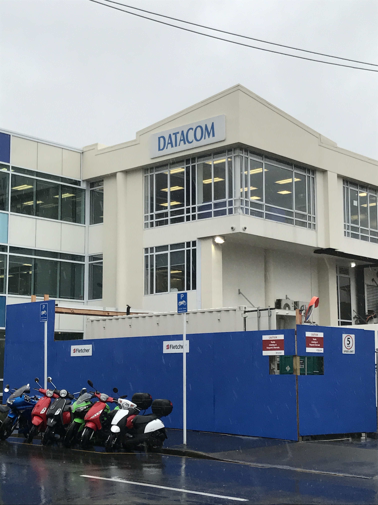
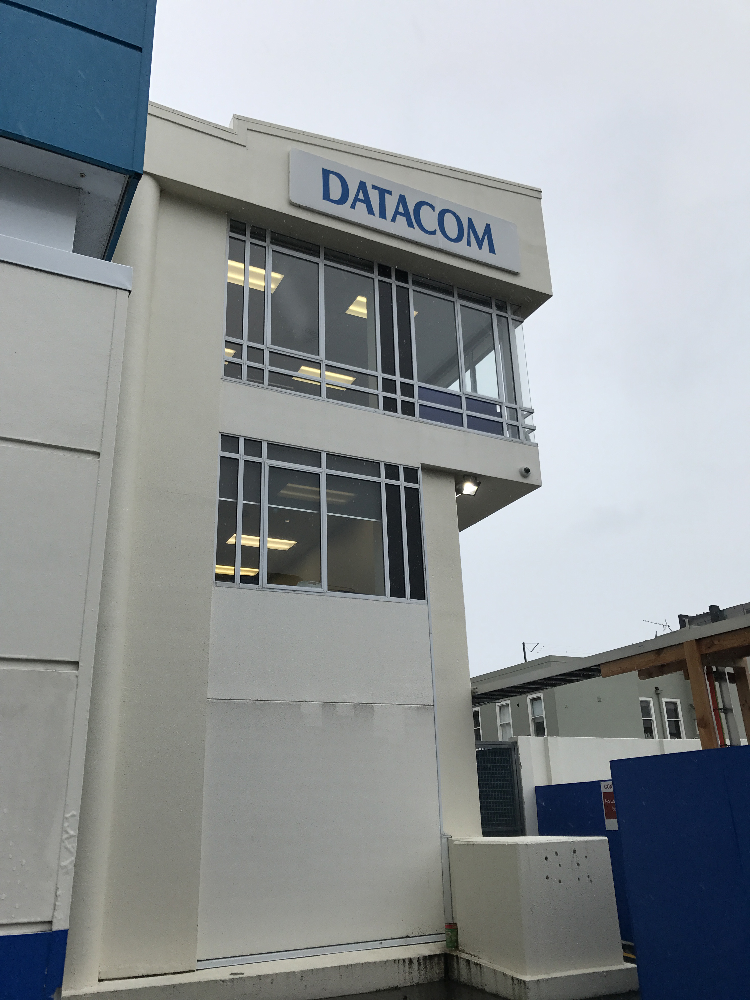
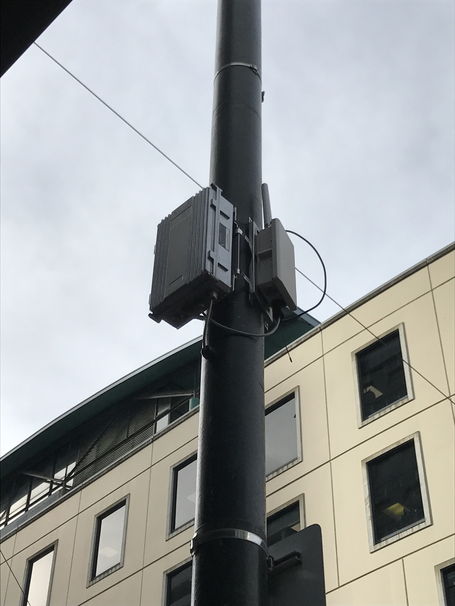
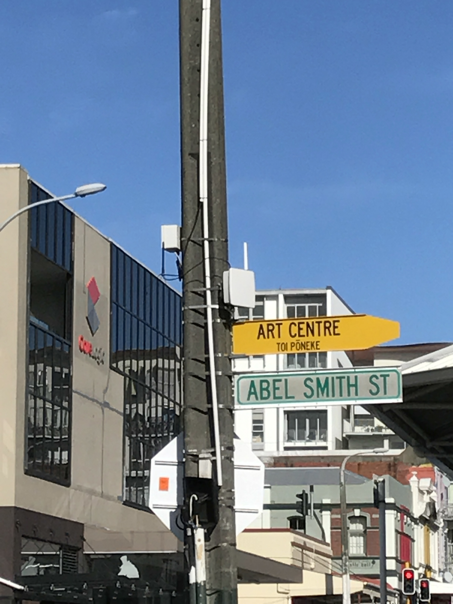
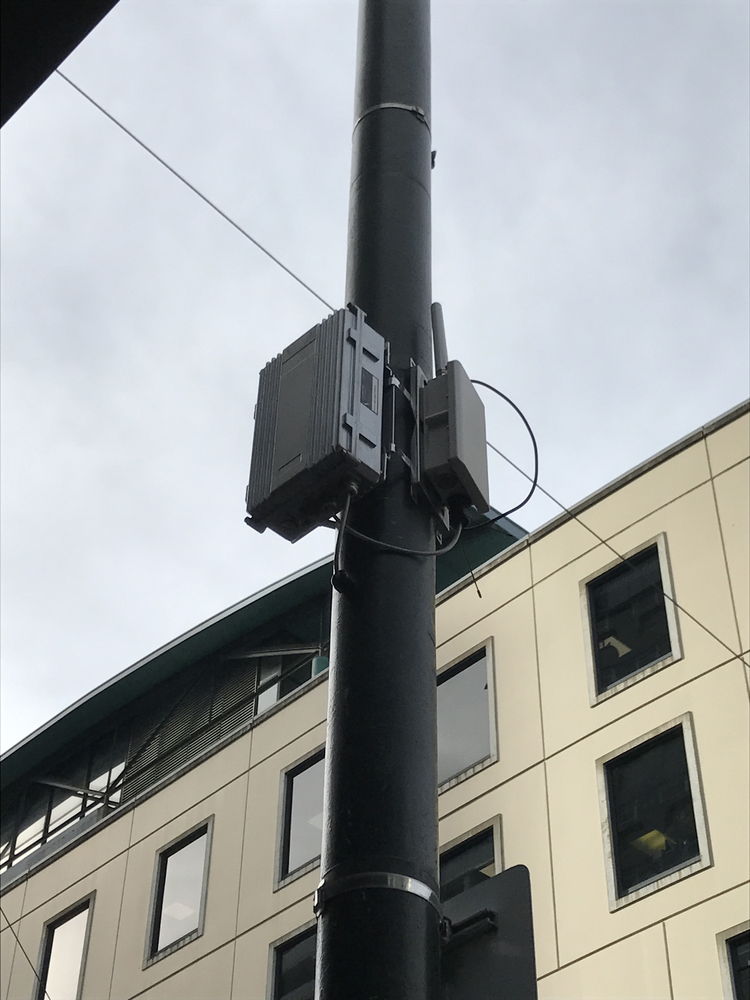
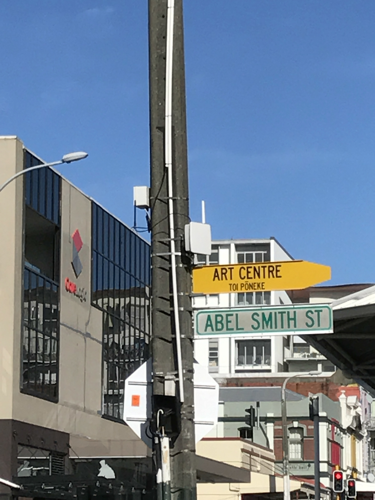

Datacom Building


Located on Abel Smith St, DATACOM says on its website they are responsible for infrastructure outsourcing and data centre hosting in Wellington. They also have ties with the Reserve Bank of New Zealand and RealMe, which are government affiliated.
Spark Building

Located on Willis St, this is the Spark New Zealand headquarters - the second largest mobile network in the country. On their website they state that they "provide voice, managed data, mobile, procurement and IT services to around 80% of all government agencies." Spark used to be known as Telecom, but changed their name in 2014.


 


